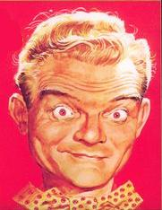
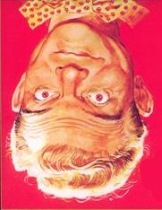

Заппа'zУх!Ой!
русский более или менее регулярный бюллетень для поклонников американского композитора
Frank'а Vincent'а Zappa'ы
Выпуск.54 (21 Декабря 2004)
Искусство мимики и жеста
I owe this part of my musical existence
to Spike Jones
The Real Frank Zappa
Book. p.172
Заппа должен? Кому только не должен. Как всякий нормальный художник. Всем и сразу.

Джонни 'Гитара' Уотсон научил маэстро играть гитарные соло. Пятерка Nutmegs - гармонично ухать басом. Игорь Стравинский - рассказывать истории во время исполненья музыкального произведения. А вот Spike Jones - искусству мимики и жеста. Буквально. Играть бровями.
|
Songs written with one idea in mind have been known to mutate into something completely different if I hear an 'optional vocal inflection' during rehearsal. I'll hear a hint of something (often a mistake) and pursue it to most absurd extreme. The 'technical expression' we use in the band to discribe the process is "PUTTING THE EYEBROWS ON IT". This is usually refers to vocal parts, although you can put the eyebrows on just about anything. |
Бывают песни, написанные с одним определенным настроением,
меняются до
неузнаваемости, если вдруг во время репетиции возникает вариант 'иной
вокальной интонации'. Не больше, чем намек (частенько из-за ошибки
исполнителя), но я ловлю его и стараюсь развить до самого абсурдного,
но логического конца.
В группе процесс имеет 'техническое определение' "СДЕЛАТЬ ЭТОМУ БРОВИ". И как правило относится к вокальным партиям, но, вообще, сделать брови можно чему угодно. |
Именно так. Приставить нос. Цыганские загульно русские "Очи Черные" превратить в горячие, но блюзовые негритянские "Hotcha Cornia". Hootchie Coochie Chornie Woman. Мастером подобных словесных и музыкальных трансформаций был кумир еще дошкольного детства FZ великий американский музыкальный эксцентрик Spike Jones. Это он научил маэстро икать между куплетом и припевом, чтоб песня делалась правдивей. И смешнее. Что, в общем-то, одно и тоже.
|
"I was a massive Spike Jones fan when I was six or seven years old, he had a hit record called 'All I Want for Christmas (Is My Two Front Teeth)' and I sent him a fan letter because of this".
"I used to really love to listen to all those records. It seems to me that if you could get a laugh out of something, that was good, and if you could make life more colorful than it actually was, that was good". as cited in K. Courrier Dangerous Kitchen p.162 |
"Я по-настоящиму обожал Спайка Джонса в возрасте шести или семи лет, у него в ту пору был хит с названием 'Все, Что Я Хочу На Рождество (Это Два Моих Передних Зуба) и я даже написал ему фанатское письмо по этому поводу".
"Мне действительно нравилось слушать его записи. Мне казалось, что если что-то можно сделать смешным, то это хорошо, если можно добавить жизни красок, чуть больше, чем в ней есть на самом деле, то это здорово". процитировано в K. Courrier Dangerous Kitchen p.162 |
Lindley Armstrong Jones, по-прозвищу Spike - Шип, родился в 1911 и пик популярности его джазика The City Slickers - Городские Хлыщи, Пижоны-Задавки, пришелся на военное и послевоенное время. Бойцов союзных войск Spike развлекал куплетами про Япошек-Плошек ("You're Sap Mister Jap") и Хера Хитлера ("Der Fuehrer's Face"), а тружеников тыла - классической балладой "Cocktails For Two" в переложении для банджо и мужского организма в глубинах похмельного синдрома.
Все вместе - что-то вроде знакомых утесовских "Джаз-болельщика" и "Барона Фон Дер Пшика". Но то, что мелькало эпизодами в репертуаре нашего народного крунера, для Spike Jones было главным делом жизни. Поиск музыкального языка комедии. Такого сочетания звуковых клише и звуковых несообразностей, которые строить и жить помогают. Как клюв Бетховену и рога Баху. Подрисованные карандашом. Сыгранные на разводном ключе, стиральной доске или железнодорожной рельсине. А то и просто в самом нижнем (от пояса считая) регистре баритон-сакса.
Заппа также с шуткой шагал по жизни. Делал ручкой и ножкой. Всегда и неизменно. В нотных тетрадях музыкантов Фрэнка параллельной нотацией прописывалась партия и шмартия. Обязательно. Как прямо играть и как с закосом. По знаку переходить с ветки на ветку. С гитарных струн на полицейскую свистульку. Об этом и рассказ имеется. Техническое описание. В автобиографии ФЗ коротенькая главка с названием (понятно) Does Humor Belong in Music. Завершается она словами, ставшими эпиграфом нашей заметки: "этой частью своего музыкального бытия я обязан Спайку Джонсу".

Как звуки "му" указывал своим лабалам учитель Фрэнка - Спайк, не знаю. Но, чувствовали они природу комических гармоний и тембров одинаково. Как фортепиано подхихикивает и как способен гоготать и ржать тромбон. Это бесспорно. Может быть, потому, что от основы шли? И тот, и другой. Буквально от мимики и жеста. Ведь Спайк был барабанщиком, ну а FZ в душе всю жизнь им оставался. И многооктавная словоохотливость других инструментов смешила, не могла не веселить тех, для кого сестра таланта - краткость?Кто знает? Ловля блох тоже способствует в немалой степени развитию различных чувств. Юмора, в первую очередь. И нестандартным способам его проявления. Кончено. А, между тем, и Фрэнк, и Спайк были большими специалистами поохотиться. Оба умели. Любили. Поймать и подковать. Не просто перкуссионисты, а прежде всего перфекционисты. Душой и сердцем. Каждой клеткой организма. Ответственной за восприятие звуков. Комических и не. То есть, изматывали музыкантов репетициями, а звукоинженеров объемом перезаписи. Всех тараканов загоняли в банку. Смешное занятие - все и всегда делать, как в самый последний раз. Без исключения. Так и жили. И курили по три пачки в день. И словно сговорившись, не дожили до пятидесяти пяти. Ни выпивоха Спайк, ни трезвенник Фрэнк.
А, впрочем, это уже не ушки и не хрюшки. Не шутка вовсе. Просто судьба. Схожая. Даже в таких забавных мелочах, как желанье деньги, заработанные клоунадой, истратить на что-нибудь богоугодное и душеподъемное. У ФЗ карман опустошали его великолепные симфонический затеи, у Спайка Джонса - "straight" танцевальный джаз The Other Orchestra. Дамы приглашают кавалеров.
Ну, что же, дело хорошее. Ведь воздержание - непременное условие запоя. Сильнее загуляешь после просушки. Вставишь им в вальсок кусок из песни поездов и самолетов. Велосипедных шин и спиц. Очень хорошо. Бодрит. Искусство мимики и жеста. Помогает среди всеобщей борьбы и труда. Особенно синхронность. Или волна. От бровей к бровям. Это, когда голоса Harry и Rhonda'ы в запповском "Thing-Fish'е" восемьдесят четвертого неотличимы от голосов Spike'а и его жены Helen из "None But The Lonely Heart (A Soaperetta)" сорок восьмого. На стадионе - эта дисциплина зовется эстафетой, а в искусстве - преемственностью. Самый лучший способ отдать долг старшему товарищу. Принять флажок и дальше передать.
При этом подмигнув, конечно. Обязательно.
Искренне Ваш, Владимир Советов
http://www.arf.ru/
| Домой | Заппа'zУх!Ой! | Поиск | Хозяин |